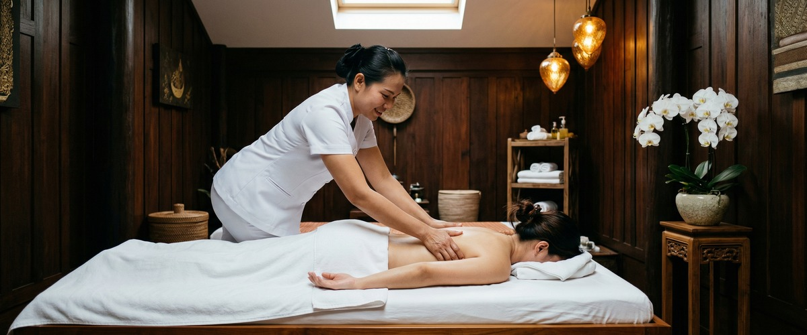
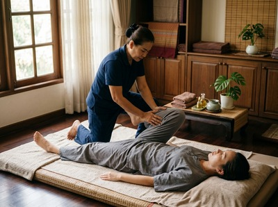

If you've never had a Thai massage before, it's completely normal to feel a little unsure about what you're walking into.

It looks different from anything you'd find in a typical spa, and it feels different too. No oils, no massage table, no towels draped over you. What you get instead is something far more active and genuinely therapeutic — a session that leaves most people wondering why they waited so long to try it. Here's exactly what to expect when you book your first Thai massage at Glasgow Thai Massage.
One of the biggest surprises for first-timers is that traditional Thai massage is performed fully clothed. You don't undress, and there's no oil involved. Wear something loose and comfortable — soft trousers and a t-shirt are ideal.
If you arrive in jeans or a fitted work suit, don't worry. We can provide loose clothing for you to change into before the session begins.

This makes Thai massage one of the most accessible treatments around. There's no awkward undressing, no draping arrangements, and no discomfort about modesty. You simply lie down, and the work begins.
Ready to give it a try? Book your session today and we'll take care of the rest.
Traditional Thai massage is performed on a firm floor mat rather than a raised table. This is not a quirk — it's a practical necessity. The mat gives the practitioner far more leverage and mobility to guide you through the stretches and joint movements that define the treatment.
It also means the session has a very different quality to it: grounded, deliberate, and connected. At Glasgow Thai Massage, our treatment space is calm and private. Your practitioner will check in with you about any areas of tension or discomfort before starting.
Thai massage, known traditionally as Nuad Boran, combines three main elements: acupressure applied along the body's sen energy lines, assisted stretching that resembles passive yoga, and rhythmic compression through the palms, thumbs, and feet.
The sen lines are a system of energy pathways — ten principal channels understood in Thai healing tradition to govern circulation, flexibility, and overall wellbeing. Your therapist works methodically through these lines, applying sustained pressure at key points to release blockages and restore flow.
Between acupressure sequences, they'll guide you through long, supported stretches — arms, legs, hips, spine. You don't need any flexibility to benefit from this. The therapist does the work; you simply breathe and let go.
If you want to explore traditional Thai massage in more depth before booking, our service page covers the full technique and what it targets.
Thai massage is not a passive, drifting experience. The pressure is firm, the stretches are real, and you'll feel it working. That said, it should never feel painful.
There's a distinction between productive intensity — the kind that releases deep muscle tension and feels like a relief even as it happens — and pain, which is a signal to speak up. If the pressure is too much, or if a stretch feels sharp rather than deep, just say so. Your practitioner will adjust immediately.
Maliwan, who trained at the Wat Pho Thai Massage School in Bangkok and has over 20 years of experience, works closely with each client to find exactly the right level of pressure for their body on that day.
Most people leave feeling genuinely lighter. There's often a clarity that comes with it — not just physical looseness, but a kind of mental reset too.
Neck and shoulder tension that's been building up for weeks can shift considerably in a single session. Back pain, restricted hips, and the stiffness that accumulates from desk work in Glasgow's offices are all conditions that respond well to regular Thai massage.
It's worth drinking water after your session and giving yourself time to rest rather than heading straight back to a desk. Some people feel mild muscle soreness the following day, particularly if it's their first session or if the treatment was focused on deep-seated tension. This is normal and usually fades within 24 hours.
There's genuinely nothing quite like your first proper Thai massage. The combination of acupressure, assisted stretching, and sen line work produces results that are difficult to describe until you've felt them. Come with an open mind, wear something comfortable, and trust the process.
When you're ready, book online now — appointments are available from our studio on West Nile Street in Glasgow City Centre, a short walk from Buchanan Street subway.
No. Traditional Thai massage is performed fully clothed on a floor mat. Wear loose, comfortable clothing such as soft trousers and a t-shirt. If you don't have suitable clothing with you, we can provide something to change into. Thai oil massage is a separate treatment that does involve light undressing, but for the traditional style, you remain fully clothed throughout.
Thai massage uses firm pressure and assisted stretching, so it can feel intense — but it should never feel painful. There is a difference between productive, deep pressure that releases muscle tension and sharp pain that signals something is wrong. Always communicate with your therapist during the session. A good practitioner will adjust the pressure to suit your body and your comfort level at any point.
Sessions typically run for 60 or 90 minutes. For a first visit, 90 minutes is a good choice if you want the therapist to work through the full body properly, including the legs, back, shoulders, and neck. A 60-minute session focuses on the areas of highest priority. Your practitioner will discuss your needs at the start to make the best use of your time.
Arrive a few minutes early so you have time to settle before the session begins. Avoid eating a heavy meal in the hour or two beforehand, as the stretching and compression involved can feel uncomfortable on a full stomach. Wear or bring loose, comfortable clothing. Let your therapist know about any injuries, health conditions, or areas of particular tension before the session starts so they can tailor the treatment accordingly.
Traditional Thai massage differs from Swedish or deep tissue massage in several key ways. It is performed fully clothed on a floor mat rather than on a table. It uses acupressure along the body's sen energy lines, assisted stretching similar to passive yoga, and rhythmic compression — rather than the oil-based kneading associated with Western massage styles. The result is a more active, whole-body experience that improves flexibility and joint mobility as well as releasing muscle tension. For a deeper look, see our overview of what makes Thai massage unique.